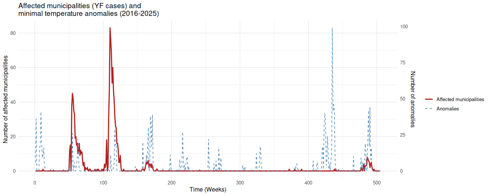

Mapping Environmental Barriers to Arbovirus Outbreaks in Brazil
How climate variables affect the distribution of mosquito-borne viruses?
🌡️ Hypothesis
- We propose that anomalous weather conditions (climate change & variability) created temporary bridges for viral survival.
- Warmer Winters: Prevented viral die-off in historically cold zones.
- Altered Rainfall: Sustained vector populations during dry seasons.
Expected minimum temperature for Brazil (left), with emphasis on the Southeast region (right). The reference temperature was obtained by averaging the weekly minimal temperature between 1986 and 2015.
Climate anomalies during the YF outbreak
Municipalities affected by yellow fever in the Southeast region of Brazil between January 2016 and June 2025 (red line). Municipalities affected by minimum temperature anomalies in the Southeast region of Brazil between January 2016 and June 2025 (dashed blue line). Data were aggregated by epidemiological week. We considered a climatic anomaly as a minimum temperature above 5 standard deviations from the expected average for the 30-year period (1986–2015).
Source: OpenDataSUS; Coopernicus CDS.
Association of cases and climate anomalies
- TODO Test if it is better to split by type of cases(humans | NHP) or by type of data (map | data.frame).
Objectives
- Data Integration
- Building a comprehensive database linking NHP epizootics with fine-scale climate data (Temp, Rain, Wind, Vegetation).
- Spatio-Temporal Model
- Identifying “Thermal Corridors” and analyzing how microclimates allowed viral persistence during winter.
- Predictive Forecasting
- Developing a risk model using climate indicators as “early warning” signals for future outbreaks.
Scientific Challenges
- ⚠️ Sampling Bias
- Dead monkeys are only found where people look.
- Solution: Occupancy Modeling & “Observer Bias” Covariates.
- ⚠️ Microclimate vs. Macroclimate
- Satellites miss the warm tree hollows where mosquitoes hide.
- Solution: Topographic Downscaling & Canopy Adjustment.
Relevance and Impact
- 🚀 Proactive Surveillance: Moving from reactive monitoring to early warning.
- 🛡️ Public Health: Enabling vaccination campaigns months in advance.
- 🌍 Scalability: A framework replicable for WNV and Leishmaniasis.